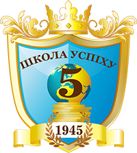
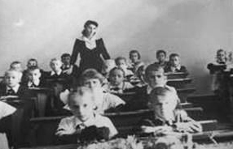

Школа №5
На Головну
Співбесіда
Як і кожна спеціалізована школа ми проводимо вібір і вибираємо тільки найкращих. Тому не забудьте про це і підготуйте вашу дитину до свого першого випробування.
Дізнатися більшеПочаткова школа
Перший і відповідальний крок для батьків - вибір початкової школи. У нашій школі ви знайдете якісну початкову освіту, добре виховання і хороше ставлення.
Середня школа
На цьому етапі наші учні дорослішають, проходять вік від дитини до юнака. Без сумніву можна сказати що це найскладніший і найважчий вік.
Дізнатися більшеDSD
Це особливий етап навчання, який у області має тільки наша школа. Успішне закінчення цього етапу дає можливість навчання в Німеччині.
Дізнатися більше
Старша школа
Цей етап є завершальним і найбільш важливіший у житті людини, адже потрібно вибрати професію, якій ти присвятиш своє життя.
Дізнатися більше
Директор
Олексин Я.В.
кандидат історичних наук,
вчитель-методист
спеціаліст вищої кваліфікаційної категорії
нагороджений нагрудним знаком "Відмінник освіти України"
заслужений працівник освіти України
заступник
Головатий Т. В.
спеціальність -
«фізика і математика»
старший вчитель
спеціаліст вищої кваліфікаційної категорії
заступник
Філіпчук Г. С.
спеціальність -
«німецька філологія»
вчитель-методист
спеціаліст вищої кваліфікаційної категорії
нагороджена нагрудним знаком "Відмінник освіти України"
заступник
Візнюк Р. Б.
заступник
Колубаєва Г. І.
заступник по виховній роботі
спеціальність –
«музика, методика виховної роботи»
старший вчитель
спеціаліст вищої кваліфікаційної категорії

об'єднання вчителів
початкових класів
керівник -
спеціаліст вищої категорії
Сливанюк Л.В.
об'єднання
вчителів-філологів
(українська мова і література,
світова література)
керівник –
старший учитель
Москалюк Л.Ю.
об'єдання вчителів
німецької та
англійської
керівник –
учитель методист
Петраш Л.В.
об'єднання вчителів
історії та географії
керівник –
учитель методист
Токарук С.І.
об'єднання вчителів
природничо-
математичного циклу
керівник –
учитель методист
Майданська О.Б.
об'єднання вчителів
художньо -
естетичного циклу
керівник –
учитель методист
Іванчук С.М.
об'єднання вчителів
фізкультури
захисту Вітчизни
керівник –
вчитель методист
Калинюк І.М.
об'єднання вихователів
ГПД
керівник –
вчитель II категорії
Токар О.М.
об'єднання класних
керівників
1 - 4-их класів
керівник –
об'єднання класних
керівників
5 - 11-их класів
керівник –
старший вчитель
Красевич Л.Б.
Наша школа має чудові традиції, професійний педагогічний склад, тут чудова атмосфера для формування і розвитку особистості учнів.
Невідомий автор
З теплом і вдячністю згадуємо шкільні роки та чудових вчителів, які зуміли виховати в нас доброту і людяність, дали нам міцні знання, які стали основою обраної нами професії та кар’єри.
Невідомий автор
Переступивши поріг цього затишного закладу, я відчула себе членом великої педагогічної сім’ї, де мене прийняли з розумінням і теплом.
Невідомий автор
+380 50-00-00-000
м. Івано-Франківськ, вул. Франка, 19
sh5if@ukr.net
8 березня 2015
Адміністрація школи і модаратори сайту вітають жіночий: педагогічний і учнівський колектив школи з міжнародним жіночим святом
8 березня.
Шановні жінки та дівчата!
Директор
Олексин Ярослав Васильович
педагогічний стаж 35 років, на посаді директора СШ №5 –17 років,
спеціальність за дипломом – «історія, суспільствознавство»
кандидат історичних наук,вчитель-методист, спеціаліст вищої кваліфікаційної категорії
нагороджений нагрудним знаком "Відмінник освіти України",заслужений працівник освіти України.
Заступник
Головатий Тарас Володимирович
педагогічний стаж 14 років
спеціальність за дипломом –«фізика і математика»
старший вчитель, спеціаліст вищої кваліфікаційної категорії
Заступник
Філіпчук Галина Семенівна
педагогічний стаж 30 років
спеціальність за дипломом – «німецька філологія»
вчитель-методист, спеціаліст вищої кваліфікаційної категорії, нагороджена нагрудним знаком "Відмінник освіти України"
Заступник
...
Заступник
Колубаєва Галина Іванівна
педагогічний стаж 16 років
спеціальність за дипломом – «музика, методика виховної роботи»
старший вчитель, спеціаліст вищої кваліфікаційної категорії
СШ № 5 є однією з найстаріших у місті. Приміщення, в якому знаходиться школа, було побудоване у 1897 р. для скарбової дирекції. А у 1913 р. для Скарбової дирекції було збудоване нове приміщення (тепер в.Грушевського,31), де у корп.№1 розмістили військові казарми, а в корп.№ 2 - тютюнову монополію. В 1939 - 1941 рр. тут знаходились НКВС та Гестапо.
Свою роботу школа № 5 проводила в кількох приміщеннях.
2008 р.
Вперше 23 випускників школи одержали міжнародні дипломи DSD C1.
2006 р.
Школа розпочала тісну співпрацю з Центральною службою з питань освіти за кордоном при Міністерстві закордонних справ ФРН та з її допомогою впроваджує навчальну програму, яка готує учнів старшої школи до екзамену на Німецький мовний диплом рівня С1.
1999р.
Налагоджені партнерські двохсторонні зв’язки з Тюрінгською гімназією Рьон м.Кальтензундгайма. Сьогодні школа активно спів-працює з інститутом ім.Гете (Німецьким культурним центром), Педагогічною службою обміну при Міністерстві освіти ФРН, Товариством галицьких німців, Українсько-Австрійським бюро кооперації у справах освіти, науки та культури, Реальною гімназією міста Берндорфа (Австрія), Асоціацією українських германістів, гімназією ім.Теодора Гойса м.Нордлінгена з Баварії.
1995р.
Школа почала активно займатись організацією міжнародних зв’язків з навчальними закладами, організаціями та товариствами Австрії та Німеччини.
1961 р.
Школа одержала нове спрямування як навчальний заклад і стала спеціалізованою школою з поглибленим вивченням німецької мови. Відкриття класів з поглибленим вивченням німецької мови стало новою сторінкою в історії школи. Ініціатором цієї справи була Ярославська Міра Абрамівна – фахівець німецької мови, Педагог з великої букви, неповторний методист і керівник, яка до кінця життя очолювала роботу кафедри вчителів німецької мови.
В ці роки школа набирає все більшої ваги в місті. Кожна інтелігентна сім'я вважає за честь віддати на навчання своїх дітей саме у школу №5.
1955 р.
Школу було переведено на вул. Шопена, 1 (зараз корпус Івано-Франківського технічного університету Нафти і газу). В приміщенні по в.Франка, 19 знаходилась школа-інтернат. Рішенням виконавчого комітету Станіславської Обласної Ради депутатів трудящих від 9.06.1962 р. (протокол №13 рішення №386) Середню школу №5 було переведено в приміщення по в.Франка, 19, затвердивши її як школу з продовженим днем.
Школа перейшла в нове приміщення по в.Франка,19, де працює і до сьогодні. На освітянській ниві 60-х працювали майстри педагогічної справи Козак Анастасія Авксентіївна, Бабенко Ганна Петрівна - заслужений вчитель України, Ланова Феодосія Степанівна, Шевченко-Ігуменцева Раїса Марківна, Салій Раїса Юхимівна, Мукосій Микола Іванович, серед них Тарас Франко - сип великого Каменяра, який викладав в школі українську мову і літературу. До 1948 р.в школі навчався його син Роланд Франко, нині - працівник посольства України у Великобританії.
1945 р.
Школу № 5 було відкрито по вул . Мельничука (зараз Економіко-Правничий інститут).Тоді в школі навчались лише хлопці. Шкільні приміщення знаходились і на міських валах. Сьогодні це будівля №1 по в.Шопена.